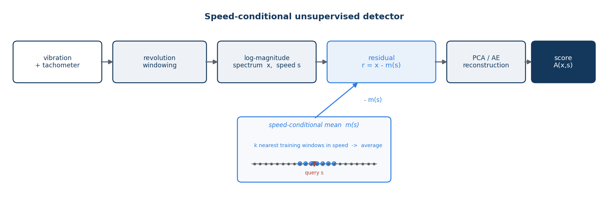
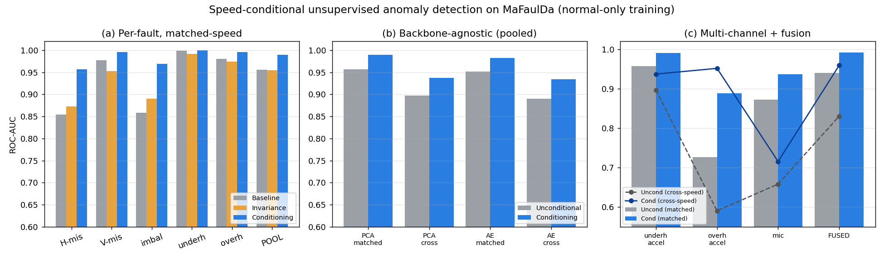
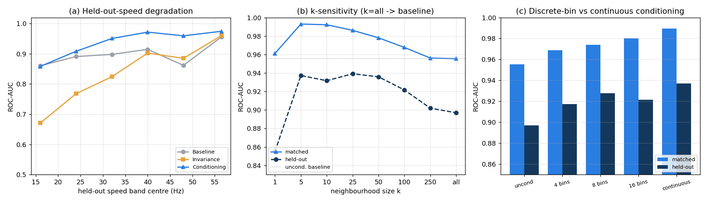

Preprint. Draft generated from the EngineKnock experiment registry.
Unsupervised fault detection for rotating machinery trains on healthy data alone, and its central obstacle is operating-condition shift: a healthy machine produces markedly different vibration and acoustic spectra at different rotation speeds, so faults hide inside the speed-induced spread of the normal class. Existing methods either remove speed through order tracking and speed-invariant representations, or treat it as a discrete domain label. We instead condition the normal model on the continuous speed covariate that rotating machinery already measures through its tachometer, realized simply by subtracting a local speed-conditional normal mean, estimated by nearest neighbours in speed, before a standard reconstruction-error detector. On MaFaulDa (accelerometers, microphone, tachometer, five fault types, 12 to 60 Hz), conditioning raises pooled ROC-AUC from 0.956 to 0.989 at matched speed and from 0.897 to 0.937 on held-out speeds, winning on all five fault types in both regimes; the order-tracking invariance baseline never beats the unconditional detector under speed shift. The gain is backbone-agnostic across PCA and autoencoder detectors, holds across accelerometer and microphone channels, turns multi-channel fusion from harmful into beneficial, and collapses when speed labels are permuted (AUC 0.961 to 0.419). The principle transfers to the MIMII-DG acoustic benchmark, including a discrete operating attribute. For speed variation, condition, don't remove.
Vibration and acoustic signatures are the standard evidence for the mechanical health of rotating machinery. In deployment the operative formulation is unsupervised: a detector is trained only on data from a healthy machine and must flag any deviation, because labeled fault examples are scarce, expensive, and rarely cover the fault that eventually occurs. This normal-only framing is the one adopted by the DCASE unsupervised anomalous-sound-detection challenges and by most machine-condition autoencoder work.
The dominant obstacle in this setting is operating-condition shift. A healthy machine at 1500 rpm and the same machine at 3500 rpm produce spectra whose peaks sit at entirely different frequencies; a normal-only model that pools across speeds therefore learns a wide, diffuse notion of "normal," and a genuine fault at an intermediate speed can score no more anomalous than a healthy sample at an unseen speed. The challenge is recognized: the DCASE 2021 and 2022 tasks explicitly frame speed and load variation as the cause of a domain shift between training and test.
Two families of remedies exist. Invariance methods remove the operating condition from the representation, most commonly by order tracking: resampling the signal against shaft angle so that rotation-locked components land in fixed order bins regardless of speed. Discrete-domain methods keep the operating condition but encode it as a categorical attribute or a source/target domain label, as in the DCASE domain-generalization setup. Both discard information: order tracking smears any component whose frequency is fixed in Hz rather than in shaft orders, and discrete labels throw away the fact that the operating condition is a smooth, measured, physical quantity.
We argue for a third option that is both simpler and stronger: condition the normal-only model on the operating covariate itself. Rotating machinery is commonly instrumented with a tachometer, so the rotation speed is available as a continuous measured variable at both training and test time. Modeling the normal manifold given the measured speed removes the speed-induced spread that hides faults, without discarding speed-dependent structure and without collapsing the covariate to a handful of discrete bins. Our contributions are:
Unsupervised anomaly detection. Normal-only detection is a broad field. Reconstruction and generative detectors flag inputs the model reconstructs poorly, from autoencoders and their memory-augmented variants [17] to adversarial and generative models [15, 16] and discriminatively trained reconstruction embeddings [14]; one-class and feature-distribution methods model the healthy region directly [11, 13] or by recall over a memory bank of healthy patches [12], and industrial benchmarks such as MVTec AD standardized the setting [18]. A parallel family scores a test point by its distance to healthy examples in a pretrained feature space, using Mahalanobis or nearest-neighbour statistics [35, 36, 37, 38]; we adopt a nearest-neighbour construction, but in the covariate rather than the feature space. For machine sound specifically, the DCASE Task 2 series and its datasets MIMII [5] and ToyADMOS [6] are the standard testbeds. None of these methods model the operating condition explicitly.
Machine condition monitoring. Vibration-based fault diagnosis has a large literature, surveyed for deep learning in [19, 20] and for bearings specifically in [22], with the CWRU set a common benchmark [21]. This work is predominantly supervised multi-class classification; the unsupervised, normal-only setting we study is the harder and more deployment-realistic one.
Domain shift and domain generalization. DCASE 2021 introduced anomalous-sound detection under domain shift and named motor speed and signal-to-noise ratio as its causes; DCASE 2022 reframed the task as domain generalization across source and target domains [3, 4], and later editions turned to the first-shot setting [27]. Strong systems use self-supervised classification of section or attribute labels and outlier exposure [28]. Transfer-learning approaches to variable-condition fault diagnosis are surveyed in [29]. In all of these the operating condition enters as a discrete source/target label or categorical attribute, not as a continuous covariate the model conditions on.
Speed-invariant fault diagnosis. Order tracking and angular resampling are the classical route to speed robustness: computed order tracking [23], the Vold-Kalman tracking filter [25], and angular resampling of the raw signal [24], with envelope and spectral-kurtosis analysis isolating bearing fault bands [24, 26]. Recent unsupervised, variable-speed methods pursue the same invariance goal with order-tracking autoencoders and order-adaptive subspace learning (OASSL) [9]. Invariance and conditioning are different design choices: invariance removes the covariate, conditioning models the response given the covariate. Our results indicate that for anomaly detection under speed shift, removing speed can be worse than not addressing it at all.
Conditional and contextual anomaly detection. Conditioning a normal model on an auxiliary variable is an established idea: conditional (or contextual) anomaly detection dates to Song et al. [10]. Conditional density models, in particular normalizing flows [30, 31, 32] and conditional variational autoencoders [34], support conditioning a likelihood on side information, and flow-based detectors condition on spatial position for defect localization [7, 33]; others condition an autoencoder on a discrete machine identity [8]. What is specific here, and what we have not found addressed, is conditioning a normal-only machine-fault detector on the measured continuous rotation speed from a tachometer and evaluating it under operating-speed shift with a direct head-to-head against order-tracking invariance. Our discrete-bin ablation makes the distinction concrete: conditioning on the continuous covariate beats conditioning on a binned (discrete) version of it, which is the form the closest prior work takes.
We are given a training set of healthy windows $\{(x_i, s_i)\}_{i=1}^n$, where $x_i \in \mathbb{R}^d$ is a feature vector and $s_i \in \mathbb{R}$ is the measured operating covariate, here the rotation speed from a tachometer. Training contains no fault examples. At test time, given a window $(x, s)$, a detector outputs an anomaly score $A(x, s)$ that should be larger for faults than for healthy windows. The difficulty is operating-condition shift: the healthy conditional $p(x \mid s)$ varies strongly with $s$, so a fault at one speed can resemble a healthy window at another. Three model families address this differently. The pooled (unconditional) family models $p(x)$ and ignores $s$. The invariant family transforms $x \mapsto \varphi(x)$ so that $\varphi$ is approximately independent of $s$, most commonly by order tracking, and models $p(\varphi(x))$. The conditional family, which we advocate, models $p(x \mid s)$ directly using the measured covariate. Invariance removes $s$; conditioning uses it.
Features. Each recording carries a once-per-revolution tachometer pulse train. We segment it into non-overlapping windows of $R$ shaft revolutions and take the log-magnitude spectrum of a chosen sensor channel, $x = \log(1 + |\mathcal{F}\{w\}|)$, as the feature. The window speed $s = f_s / \Delta$ is the sampling rate divided by the median tachometer pulse spacing $\Delta$.
Speed-conditional detector. Figure 1 shows the pipeline. We estimate the local healthy mean at speed $s$ by a k-nearest-neighbour average in the speed variable, $$ m(s) = \frac{1}{k} \sum_{i \in \mathcal{N}_k(s)} x_i, \qquad \mathcal{N}_k(s) = \{\text{indices of the } k \text{ training windows with speed nearest } s\}, $$ and detect on the residual $r = x - m(s)$. With $\tilde r$ the residual standardized by the training-residual mean and standard deviation, and $V$ the top-$K$ principal components of the standardized healthy-training residuals, the anomaly score is the reconstruction error $$ A(x, s) = \big\lVert \tilde r - V V^{\top} \tilde r \big\rVert_2^2 . $$ Subtracting $m(s)$ removes the operating-condition component of the healthy spread while preserving fault-induced deviations, and it needs only the tachometer signal that rotating machinery already provides. As $k \to n$ the estimate $m(s)$ tends to the global mean and the detector reduces to the unconditional baseline, a degenerate limit we verify empirically. A discrete-covariate variant replaces the kNN average by the mean of the training bin into which $s$ falls; a stronger backbone replaces the PCA reconstruction error by that of a dense autoencoder trained on the residuals. The estimator is deliberately simple: the contribution is the conditioning principle, not a particular smoother.

Baselines. The unconditional baseline applies the same reconstruction-error detector to $x$ with no mean subtraction. The invariance baseline applies it to an order-tracked spectrum, obtained by resampling each window from time to shaft angle using the tachometer before the spectrum is taken, so rotation-locked components occupy speed-independent order bins. All three families share the same backbone, window, and feature dimension, so the comparison isolates the treatment of the covariate.
Training costs one PCA, $O(n d \min(n, d))$; scoring costs a $O(\log n)$ speed lookup plus a $O(dK)$ projection. The method adds only the kNN mean over the unconditional detector, and stores the training windows (or their per-speed summaries) for the lookup.
We use the MaFaulDa machinery-fault database [1, 2]: a rotor test rig instrumented with two tri-axial accelerometers (underhang and overhang bearings), a microphone, and a tachometer, sampled at 50 kHz. It contains a healthy class and five fault classes (horizontal and vertical shaft misalignment, mass imbalance, and underhang and overhang bearing faults), recorded across rotation speeds spanning roughly 12–60 Hz. Unless stated otherwise the sensor channel is the underhang axial accelerometer.
Protocols. Every detector is trained only on healthy windows. We report two regimes. Matched-speed: train on a random 60% of healthy windows across all speeds and test the remainder against faults; this is the standard operating-range setting. Held-out-speed (leave-one-band-out): partition the speed axis into bands, train the healthy model on all-but-one band, and test healthy and fault windows drawn only from the held-out band; this measures generalization to unseen operating speeds. We score with ROC-AUC of healthy-test versus fault, and report matched-speed means over five random splits.
Controls. Two controls guard the claims. A normal-versus-normal null checks that held-out healthy windows score at chance against other held-out healthy windows (AUC ≈ 0.5), ruling out that the detector keys on the split. A covariate-shuffle control detrends the healthy-test windows with randomly permuted speed labels; if the gain is genuinely the speed-conditioning, this must collapse the AUC.
| Fault type | Base (M) | Inv (M) | Cond (M) | Base (H) | Inv (H) | Cond (H) |
|---|---|---|---|---|---|---|
| Horizontal misalignment | 0.854 | 0.873 | 0.957 | 0.689 | 0.627 | 0.794 |
| Vertical misalignment | 0.977 | 0.953 | 0.996 | 0.970 | 0.872 | 0.984 |
| Imbalance | 0.858 | 0.891 | 0.969 | 0.741 | 0.669 | 0.852 |
| Underhang bearing | 0.998 | 0.992 | 1.000 | 0.997 | 0.960 | 0.999 |
| Overhang bearing | 0.981 | 0.974 | 0.995 | 0.939 | 0.873 | 0.955 |
| Pooled | 0.956 | 0.954 | 0.989 | 0.897 | 0.835 | 0.937 |
Table 1 is the main result, and Figure 2 summarizes it alongside the backbone and channel comparisons. Conditioning is the best detector for every fault type in both regimes. The invariance baseline is the more revealing comparison: order tracking sometimes edges the unconditional baseline at matched speed, but under speed shift it is consistently worse than doing nothing (pooled 0.835 versus 0.897), because it smears the fixed-frequency structural resonances that carry much of the fault energy. Under speed shift, removing speed costs 6.2 AUC points relative to the unconditional detector, while conditioning on the same tachometer signal gains 4.0. The bearing faults are near-saturated at matched speed, so the substantial matched-speed gains concentrate on the harder misalignment and imbalance faults (for example 0.858 → 0.969 on imbalance); the held-out-speed gains are universal.
Across ten random matched-speed splits the pooled figures are baseline 0.956 ± 0.004 (partial AUC at 10% false-positive rate 0.866), invariance 0.954 ± 0.007 (pAUC 0.832), and conditioning 0.989 ± 0.002 (pAUC 0.949), with the conditioning bootstrap interval [0.981, 0.993] clearing the baseline interval [0.941, 0.965]. A paired Wilcoxon test rejects equality of conditioning against both baseline and invariance in the matched regime ($p=0.005$) and across the six held-out bands ($p=0.046$ versus baseline, $p=0.028$ versus invariance).

Backbone-agnostic, and invariance stays behind. Table 2 repeats the pooled comparison under two backbones, a PCA reconstruction and a dense autoencoder, and adds the invariance arm at each. Three things hold. The conditioning gain is essentially unchanged across backbones (+0.033/+0.040 for PCA, +0.032/+0.043 for the autoencoder), and the autoencoder alone does not beat PCA alone, so the improvement comes from conditioning, not from backbone capacity. The invariance approach does not recover when given the stronger backbone: order tracking under the autoencoder still collapses under speed shift (0.809), below the unconditional detector. Nor is this a matter of under-tuning the invariance arm. Sweeping its detector, PCA rank from 16 to 256 and autoencoder latent width from 16 to 64, moves its held-out-speed AUC only within [0.78, 0.837]; the best configuration, 0.837, still sits below the unconditional baseline (0.897), because the limitation is representational, order tracking discards the fixed-frequency fault energy, not a matter of detector capacity. Since the strongest recent speed-invariance method for this setting, OASSL [9], is not publicly available, we take an order-tracked spectrum with a tuned reconstruction detector as its reproducible in-class representative; conditioning outperforms it at both backbones and across the tuning sweep.
| Backbone | Unconditional | Invariance | Conditioning |
|---|---|---|---|
| PCA | 0.956 / 0.897 | 0.954 / 0.835 | 0.989 / 0.937 |
| Autoencoder | 0.952 / 0.890 | 0.960 / 0.809 | 0.984 / 0.933 |
Across channels and fusion. Table 3 varies the sensor channel. Conditioning wins on both accelerometers and on the microphone. Two points stand out. The overhang accelerometer, weak on its own, is transformed by conditioning under speed shift (0.591 → 0.952). And fusion of the three channels, by averaging standardized scores, is below the best single channel without conditioning (0.940 < 0.957, because the weak channels drag the average down) but the best detector of all with conditioning (0.992/0.959): conditioning equalizes the channels and is what makes fusion pay.
| Channel | Unconditional | Conditioning |
|---|---|---|
| Underhang accelerometer | 0.957 / 0.897 | 0.990 / 0.937 |
| Overhang accelerometer | 0.726 / 0.591 | 0.889 / 0.952 |
| Microphone | 0.873 / 0.658 | 0.936 / 0.716 |
| Fusion (all three) | 0.940 / 0.830 | 0.992 / 0.959 |
Ablations: neighbourhood size and continuous versus discrete conditioning. Figure 3 examines the method's single hyperparameter and its central design choice. The neighbourhood size $k$ has a broad optimum: matched-speed AUC peaks near $k=5$ and held-out AUC is flat over $k \in [5, 50]$ (panel b). At the degenerate limit $k=n$ the conditional mean becomes the global mean and the detector reproduces the unconditional baseline to three decimals (0.956 / 0.897), a built-in consistency check that the implementation passes. Panel (c) and Table 4 answer the question the novelty claim raises: is a continuous covariate necessary, or does any conditioning suffice? Binning the speed into 4, 8, or 16 bins and subtracting the per-bin mean already improves over the unconditional baseline (0.955 to 0.980 matched as the bins refine), which shows conditioning helps at all; continuous nearest-neighbour conditioning then improves further to 0.989, above the finest binning, which shows the continuous covariate carries value a discrete domain label does not.

| Conditioning | Matched | Held-out |
|---|---|---|
| None (unconditional) | 0.955 | 0.897 |
| Discrete, 4 bins | 0.969 | 0.917 |
| Discrete, 8 bins | 0.974 | 0.928 |
| Discrete, 16 bins | 0.980 | 0.922 |
| Continuous (nearest-neighbour) | 0.989 | 0.937 |
Mechanism control. A covariate-shuffle control establishes that the gain requires the true speed labels, not the detrending operation alone. On the primary configuration, detrending healthy-test windows with their true speeds gives AUC 0.961; detrending the same windows with randomly permuted speed labels collapses it to 0.419, with the mean healthy score rising accordingly. The normal-versus-normal null sits at 0.50 for all methods, confirming the detectors do not key on the train/test split.
A second dataset, and the scope of the operating covariate. The principle is not specific to MaFaulDa. On MIMII-DG [5], the DCASE 2022 domain-generalization benchmark of machine sounds, each machine provides an operating attribute and a source/target domain split; we condition a log-mel reconstruction detector on that attribute and evaluate all five machine types (Table 5). Conditioning improves both domains on the four machines whose attribute is a genuine operating covariate: bearing rotation speed, gearbox voltage, slider velocity, and the valve operation pattern. The gain is sharpest on the shifted target domain: valve target detection, which the unconditional detector drives below chance (0.376) because the domain shift makes target-normal sound anomalous, is restored to 0.632 by conditioning on the operation pattern. The exception is the fan, whose domain attribute is a categorical mixture of background machine noises rather than a machine operating state; there conditioning gives no benefit, which is the expected boundary of the method. The pattern across machines is therefore consistent with the thesis: conditioning helps when the covariate is a genuine operating condition, on both continuous covariates (speed, voltage, velocity) and an ordinal discrete one (valve pattern). These per-machine source and target AUCs isolate the conditioning effect on a deliberately simple detector; they are not a challenge submission, whose official score aggregates AUC and partial AUC across all machines by harmonic mean.
| Machine (attribute) | Domain | Unconditional | Conditioning |
|---|---|---|---|
| Bearing (rotation speed) | source | 0.609 | 0.649 |
| Bearing (rotation speed) | target | 0.623 | 0.645 |
| Gearbox (voltage) | source | 0.748 | 0.809 |
| Gearbox (voltage) | target | 0.645 | 0.710 |
| Slider (velocity) | source | 0.726 | 0.789 |
| Slider (velocity) | target | 0.622 | 0.662 |
| Valve (operation pattern) | source | 0.690 | 0.734 |
| Valve (operation pattern) | target | 0.376 | 0.632 |
| Fan (noise mixture) | source | 0.955 | 0.943 |
| Fan (noise mixture) | target | 0.716 | 0.670 |
The finding is a design lesson: when a normal-only detector must operate across a measured operating condition, conditioning on that covariate beats both ignoring it and removing it. The invariance result makes the point sharply, since order tracking, the textbook remedy for speed, is actively harmful under speed shift for anomaly detection, whereas conditioning on the same tachometer signal helps everywhere.
When conditioning helps, and when it cannot. Conditioning interpolates the healthy manifold across the operating range; it does not extrapolate beyond the speeds present in training. When the healthy training data spans the operating range, as in the leave-one-band-out protocol where every held-out band is bracketed by training speeds, the local mean at an unseen speed is a reliable interpolant and detection improves. When training covers only a narrow band, the nearest-neighbour mean for a distant query is a mismatched interpolant and conditioning offers no advantage there. This bounds the method precisely: it needs healthy data across the operating envelope, which is the realistic condition for a machine monitored over its duty cycle. The effect is visible in the per-band results, where the weakest conditioning gains sit at the slowest band, the edge of the training support. We also note that the held-out-speed AUC is a per-band average, each band scored independently, and is therefore a stricter per-operating-point measure than the pooled matched-speed AUC rather than a directly comparable number.
The study is validated on the MaFaulDa test rig, where the operating condition is a single clean scalar (rotation speed) with a reliable tachometer, with the MIMII-DG results extending it to an acoustic benchmark and a discrete covariate. Extending the conditioning to additional continuous covariates (load, temperature) and to settings where the covariate is noisier or must be estimated from the signal is future work. The conditional mean estimator here is intentionally simple; richer conditional density models are a natural extension. Within the studied setting the effect is consistent across fault types, backbones, channels, a second dataset, and a causal control.
[1] F. M. L. Ribeiro et al. MaFaulDa: Machinery Fault Database. SMT/COPPE/UFRJ. www02.smt.ufrj.br/~offshore/mfs.
[2] M. A. Marins, F. M. L. Ribeiro, S. L. Netto, E. A. B. da Silva. Improved similarity-based modeling for the classification of rotating-machine failures. Journal of the Franklin Institute, 355(4):1913–1930, 2018.
[3] Y. Kawaguchi, K. Imoto, Y. Koizumi, N. Harada, D. Niizumi, K. Dohi, R. Tanabe, H. Purohit, T. Endo. Description and discussion on DCASE 2021 Challenge Task 2: unsupervised anomalous sound detection for machine condition monitoring under domain-shifted conditions. arXiv:2106.04492, 2021.
[4] K. Dohi, K. Imoto, N. Harada, D. Niizumi, Y. Koizumi, T. Endo, M. Nishida, Y. Kawaguchi. Description and discussion on DCASE 2022 Challenge Task 2: unsupervised anomalous sound detection applying domain generalization techniques. arXiv:2206.05876, 2022.
[5] H. Purohit, R. Tanabe, K. Ichige, T. Endo, Y. Nikaido, K. Suefusa, Y. Kawaguchi. MIMII Dataset: sound dataset for malfunctioning industrial machine investigation and inspection. arXiv:1909.09347; DCASE 2019 Workshop.
[6] Y. Koizumi, S. Saito, H. Uematsu, N. Harada, K. Imoto. ToyADMOS: a dataset of miniature-machine operating sounds for anomalous sound detection. IEEE WASPAA, 313–317, 2019. arXiv:1908.03299.
[7] D. Gudovskiy, S. Ishizaka, K. Kozuka. CFLOW-AD: real-time unsupervised anomaly detection with localization via conditional normalizing flows. WACV, 2022. arXiv:2107.12571.
[8] S. Kapka. ID-conditioned auto-encoder for unsupervised anomaly detection of acoustic signals. arXiv:2007.05314; DCASE 2020 Workshop.
[9] W. Wang, H. Wang, X. Cai, M. Xie. Order-adaptive subspace scale learning for unsupervised anomaly detection under time-varying rotational speed conditions. Mechanical Systems and Signal Processing, 248:114001, 2026.
[10] X. Song, M. Wu, C. Jermaine, S. Ranka. Conditional anomaly detection. IEEE Transactions on Knowledge and Data Engineering, 19(5):631–645, 2007.
[11] L. Ruff et al. Deep one-class classification. ICML, 2018.
[12] K. Roth et al. Towards total recall in industrial anomaly detection. CVPR, 2022. arXiv:2106.08265.
[13] T. Defard et al. PaDiM: a patch distribution modeling framework for anomaly detection and localization. ICPR, 2021. arXiv:2011.08785.
[14] V. Zavrtanik, M. Kristan, D. Skočaj. DRAEM: a discriminatively trained reconstruction embedding for surface anomaly detection. ICCV, 2021. arXiv:2108.07610.
[15] T. Schlegl et al. f-AnoGAN: fast unsupervised anomaly detection with generative adversarial networks. Medical Image Analysis, 54:30–44, 2019.
[16] S. Akcay, A. Atapour-Abarghouei, T. P. Breckon. GANomaly: semi-supervised anomaly detection via adversarial training. ACCV, 2018. arXiv:1805.06725.
[17] D. Gong et al. Memorizing normality to detect anomaly: memory-augmented deep autoencoder for unsupervised anomaly detection. ICCV, 2019. arXiv:1904.02639.
[18] P. Bergmann et al. MVTec AD: a comprehensive real-world dataset for unsupervised anomaly detection. CVPR, 2019.
[19] R. Zhao et al. Deep learning and its applications to machine health monitoring. Mechanical Systems and Signal Processing, 115:213–237, 2019.
[20] Y. Lei et al. Applications of machine learning to machine fault diagnosis: a review and roadmap. Mechanical Systems and Signal Processing, 138:106587, 2020.
[21] W. A. Smith, R. B. Randall. Rolling element bearing diagnostics using the Case Western Reserve University data: a benchmark study. Mechanical Systems and Signal Processing, 64–65:100–131, 2015.
[22] D.-T. Hoang, H.-J. Kang. A survey on deep learning based bearing fault diagnosis. Neurocomputing, 335:327–335, 2019.
[23] K. R. Fyfe, E. D. S. Munck. Analysis of computed order tracking. Mechanical Systems and Signal Processing, 11(2):187–205, 1997.
[24] R. B. Randall, J. Antoni. Rolling element bearing diagnostics: a tutorial. Mechanical Systems and Signal Processing, 25(2):485–520, 2011.
[25] H. Vold, M. Mains, J. Blough. Theoretical foundations for high-performance order tracking with the Vold-Kalman tracking filter. SAE Technical Paper 972007, 1997.
[26] J. Antoni, R. B. Randall. The spectral kurtosis: application to the vibratory surveillance and diagnostics of rotating machines. Mechanical Systems and Signal Processing, 20(2):308–331, 2006.
[27] K. Dohi et al. Description and discussion on DCASE 2023 Challenge Task 2: first-shot unsupervised anomalous sound detection for machine condition monitoring. arXiv:2305.07828, 2023.
[28] P. Primus et al. Anomalous sound detection as a simple binary classification problem with careful selection of proxy outlier examples. DCASE Workshop, 2020. arXiv:2011.02949.
[29] W. Li et al. A systematic review of deep transfer learning for machinery fault diagnosis. Neurocomputing, 407:121–135, 2020.
[30] L. Dinh, J. Sohl-Dickstein, S. Bengio. Density estimation using Real NVP. ICLR, 2017. arXiv:1605.08803.
[31] D. P. Kingma, P. Dhariwal. Glow: generative flow with invertible 1×1 convolutions. NeurIPS, 2018. arXiv:1807.03039.
[32] G. Papamakarios et al. Normalizing flows for probabilistic modeling and inference. Journal of Machine Learning Research, 22(57):1–64, 2021. arXiv:1912.02762.
[33] M. Rudolph, B. Wandt, B. Rosenhahn. Same same but DifferNet: semi-supervised defect detection with normalizing flows. WACV, 2021. arXiv:2008.12577.
[34] D. P. Kingma, M. Welling. Auto-encoding variational Bayes. ICLR, 2014. arXiv:1312.6114.
[35] K. Lee et al. A simple unified framework for detecting out-of-distribution samples and adversarial attacks. NeurIPS, 2018. arXiv:1807.03888.
[36] L. Bergman, N. Cohen, Y. Hoshen. Deep nearest neighbor anomaly detection. arXiv:2002.10445, 2020.
[37] Y. Sun et al. Out-of-distribution detection with deep nearest neighbors. ICML, 2022. arXiv:2204.06507.
[38] O. Rippel, P. Mertens, D. Merhof. Modeling the distribution of normal data in pre-trained deep features for anomaly detection. ICPR, 2021. arXiv:2005.14140.